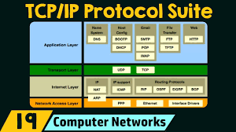

Transmission Control Protocol / Internet Protocol (TCP/IP)
What is TCP/IP?
TCP/IP is a suite of communication protocols used to interconnect network devices on the internet. It serves as the basic communication language of the internet and private networks (intranets and extranets). It is named after its two most important protocols: TCP and IP.
How It Works: The Four Layers
TCP/IP breaks data into small "packets" and sends them across the network. To do this efficiently, it uses a four-layer model:
- Application Layer: Provides network services to applications (e.g., HTTP, FTP, SMTP).
- Transport Layer (TCP): Responsible for end-to-end communication and error-free delivery of data.
- Internet Layer (IP): Handles the addressing and routing of packets to their destination.
- Network Access Layer: Defines how data is physically sent through the network hardware.

TCP vs. IP
While they work together, they have distinct roles. IP is like the address on an envelope; it tells the data where to go. TCP is like a registered mail service; it ensures the contents are broken down correctly at the start and reassembled perfectly at the destination, asking for a "resend" if any part is lost.